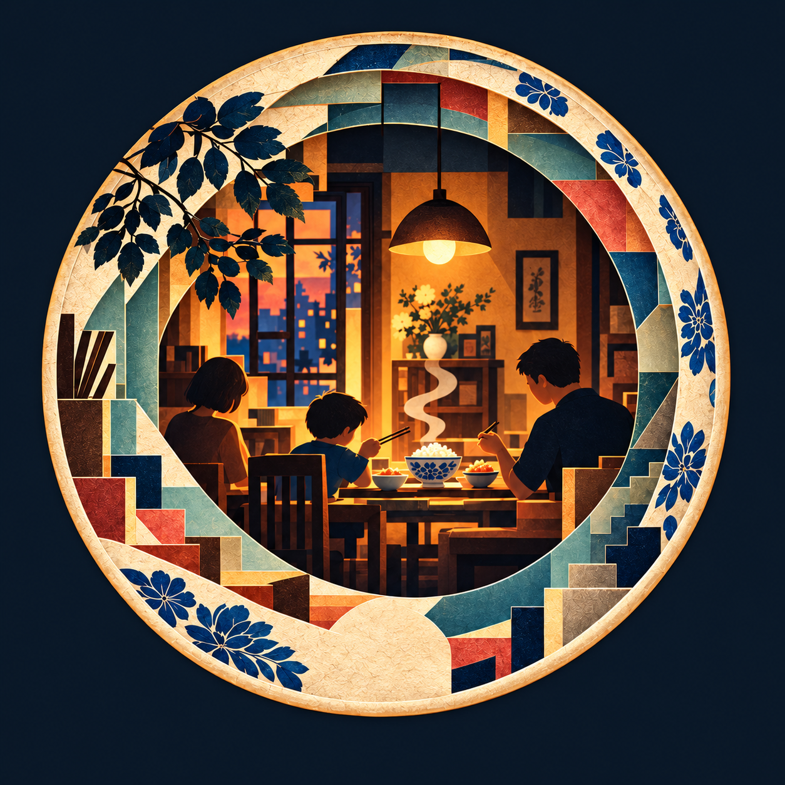

PROLOGUE · BEFORE THE FIRST VERSION
00Cơm nguội
A childhood family meal glows beneath an amber lamp, with a shared bowl of rice at the heart of the table.
THE BOWLCOMPLETE CHAPTER
AN INTERACTIVE LITERARY ATLAS
One book. Thirty-two portals.
A continuous journey through the
many versions of myself.

DRAG RING TO TURN / SWIPE OR SCROLL
PROLOGUE · BEFORE THE FIRST VERSION
00A childhood family meal glows beneath an amber lamp, with a shared bowl of rice at the heart of the table.
PAPER. MEMORY. POSSIBILITY.
Blue cloth. Stepped paper layers. A window into a life still taking shape. The same circular language moves from the screen to the page, giving every chapter its own entrance.
One continuous
volume
Illustrated
chapter portals
Acts, each with
its own rhythm
THE STORY BEHIND THE CIRCLE
Some memories fit neatly together. Others overlap, drift, or leave something unfinished. Across five acts, the portal changes shape with the narrator: from precise circles to open arcs.
The circle is an invitation to look again. Start at the beginning, or enter wherever something feels familiar.